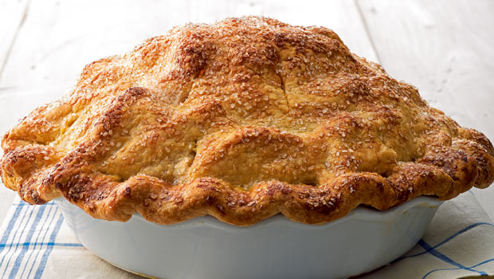

Mile-High Apple Pie

Description
A delishous apple pie just like Mom used to make.
Resist the urge to cut into this pie before it has cooled completely so the juices have time to thicken. This pie tastes even better the day after it has been baked.
Ingredients
- 1/2 cup all-purpose flour, plus more for rolling
- Deep-Dish Pate Brisee
- 5 1/2 pounds firm tart apples (about 14), such as Empire or Granny Smith
- Juice of 2 lemons
- 1 cup sugar, plus more for sprinkling
- 2 teaspoons ground cinnamon
- 3 tablespoons chilled unsalted butter, cut into small pieces
- 1 large egg yolk
Steps
- Preheat oven to 450 degrees. On a lightly floured work surface, roll out the smaller piece of pate brisee into a 15-inch round about 1/8-inch thick, dusting surface with flour to prevent sticking, as needed. Brush off excess flour. Roll dough around rolling pin, and place over a deep-dish 9-inch pie plate. Line plate with dough, pressing it into the corners. Trim dough to within 1 inch of the pie plate. Cover with plastic wrap; refrigerate.
- Roll out remaining piece of dough into an 18-inch round. Transfer round to a baking sheet; cover with plastic wrap, and refrigerate.
- Peel and core apples, and cut into 1/4-inch-thick slices. Place slices in a large bowl; sprinkle with lemon juice to prevent discoloration. In a small bowl, combine flour, sugar, and cinnamon; toss with apple slices.
- Remove remaining dough from refrigerator; place apple mixture into prepared pie plate, mounding it in a tall pile. Dot filling with butter. Place dough round over the apples. Tuck edge of top dough between edge of bottom dough and rim of pan. Using your fingers, gently press both layers of dough along the edge to seal, and crimp as desired.
- Using a paring knife, cut several vents in top of dough to allow steam to escape. In a small bowl, whisk together egg yolk with 2 tablespoons water to make a glaze. Brush surface with egg glaze; sprinkle with sugar. Place on a baking sheet, this will catch any juices that may overflow during baking. Bake until crust is golden, about 15 minutes.
- Reduce oven temperature to 350 degrees and continue baking until crust is golden brown and juices are bubbling, 1 hour to 1 hour 15 minutes. Remove from oven, and let cool completely before serving.